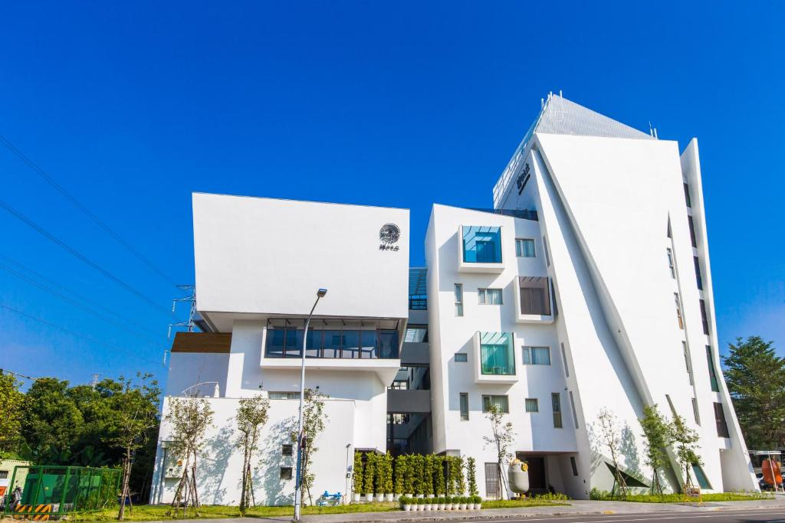
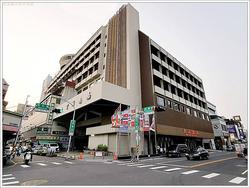
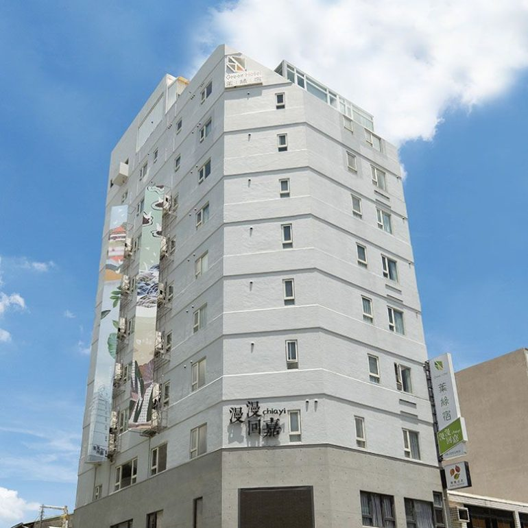

| 天成文旅繪日之丘|嘉義兆品酒店|葉綠宿 | |
| 天成文旅繪日之丘 | |
天成飯店集團新品牌「天成文旅」，以注重在地文化特色，客製化打造專業飯店為核心。「天成文旅-繪日之丘」為天成文旅全新開展的第一家設計精品旅館品牌，位於嘉義大雅路，呈現白色幾何堆疊的外觀，宛如美術館般的優雅外型，闡述出簡約的設計風格，客房則融入些許活潑的色調，亮眼吸睛。並且結合阿里山的意象:日出、山嵐、檜木…等自然素材，透過設計師手法的轉換，巧妙的出現於公共空間與客房之中，與旅客對話產生驚喜共鳴。飯店主要鎖定親子市場，因此也會打造具有童趣記憶的裝置藝術，期待給予消費者一個會心一笑的旅遊體驗。 地址:600嘉義市東區大雅路一段888號 資料來源:天成文旅繪日之丘top |
 |
嘉義兆品酒店 |
|
|  | 雲朗觀光集團是個致力於創新、人文與藝術的連鎖酒店系統，秉持態度、速度、細度的管理哲學，提供細緻、體貼、親切的服務，以期讓賓客擁有美好的假期與周到的旅程。 地址:600嘉義市西區文化路257號 資料來源:嘉義兆品酒店top |
葉綠宿 |
|
出發吧！開啟心旅行✦ 2013年葉綠宿於台中萌芽 此刻，葉綠宿在城市各處種下希望的種子 地址:60048嘉義市西區民生北路175號177號 資料來源:葉綠宿top |
 |